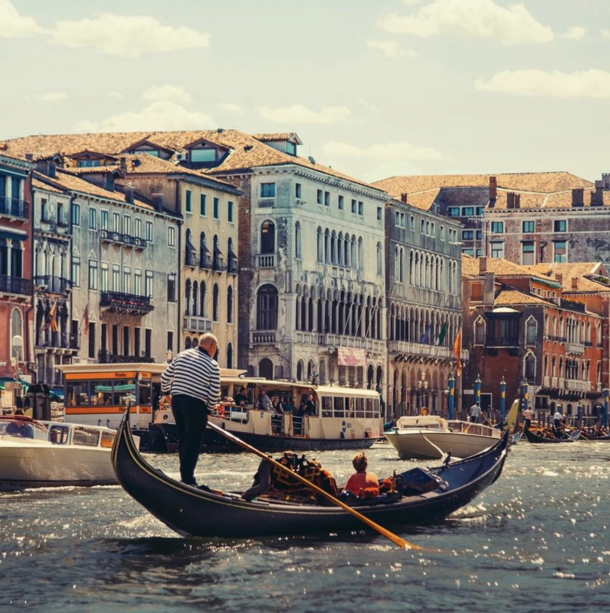

Even if you visited it thousands of times, it is always a pleasure to be back in Venice, probably one of the most beautiful citiescittá in the world.
From Pellestrina it takes you one hourora and half to get to Venice city centre, but you're used to it 'cause you attended high school for fivecinque years there, and commuted every day.
It was in high school, in fact, that you met Elisa. She's form Burano, another island of Venice, and she is a professional rowervogatrice . She works for a row company and decided to give you a ridepassaggio today.
Gondolas are too expensivecare , plus locals never take a goldola. What they do, instead, is taking a gondola-ferry, which is very similar to a gondola, that carries you side to side of a canal for just 2,50 euros!

Click on "Final" if you want to continue meeting people and visiting Pellestrina.
Or click "Go back" if you want to relive some island experiences.